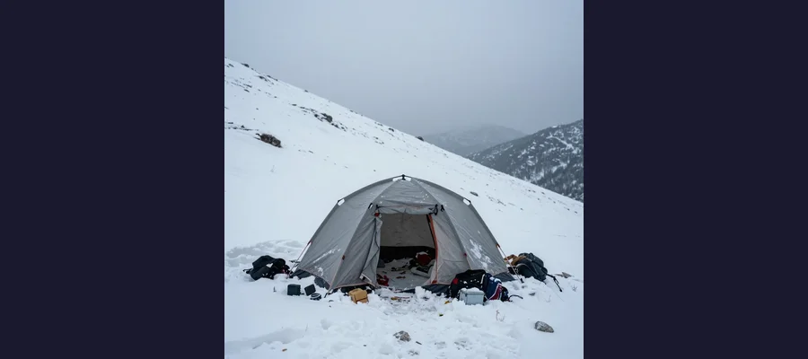
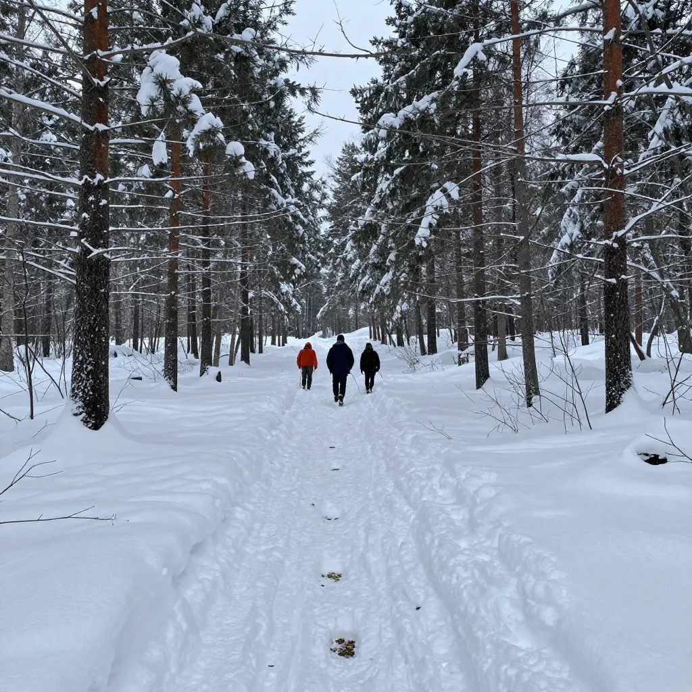

The Dyatlov Pass Incident: Nine Hikers, a Cut Tent, and the Soviet Wilderness Mystery That Endures

The frozen slopes of Kholat Syakhl — Dead Mountain — in the Russian Urals. On the night of February 1, 1959, something drove nine experienced hikers from their tent into the frozen darkness. All nine would be found dead.
On the night of February 1, 1959, something happened on the slope of a mountain in the Soviet Union that has never been fully explained. Nine experienced hikers — students and graduates from the Ural Polytechnical Institute — were camping on the eastern slope of Kholat Syakhl, a mountain whose name in the local Mansi language means "Dead Mountain." Something terrified them so profoundly that they cut open their tent from the inside and fled into the Siberian night, where temperatures plummeted to -30°C (-22°F). They left behind their boots, their coats, their supplies — everything they needed to survive. When searchers found the tent nine days later, it was still standing, still full of belongings, but sliced open as if its occupants had been desperate to escape immediately. Over the following weeks and months, all nine bodies were recovered — but the circumstances of their deaths defied easy explanation. Two were found near the edge of a forest, barefoot and in their underwear. Three more were discovered at intervals between the tent and the trees, as if they had been trying to crawl back. The final four were not found until May, in a ravine 250 feet from the others, under 13 feet of snow. Three of the hikers had suffered catastrophic, fatal injuries — crushed chests and fractured skulls — described by the coroner as requiring force equivalent to a car crash, yet with no external wounds. One woman was missing her tongue, eyes, and part of her lip. Traces of radiation were detected on some of their clothing. The official Soviet investigation, led by investigator Lev Ivanov, concluded that the deaths were caused by "a compelling natural force" — and then classified the files. For more than 60 years, the Dyatlov Pass Incident has been one of the most haunting and debated wilderness mysteries in history.
What makes the Dyatlov Pass Incident so enduring is not just the strangeness of the individual details — the cut tent, the missing tongue, the radiation, the inexplicable injuries — but the way these details combine to resist any single, tidy explanation. Every theory accounts for some of the evidence but leaves other elements unexplained. The avalanche theory, now the leading scientific explanation, can account for the crushed chests but struggles with the cut tent. The military weapons testing theory explains the injuries and radiation but lacks documentary evidence. The UFO theory, based on reports of glowing orbs in the sky from other hikers in the region, explains nothing but refuses to die. The Dyatlov Pass Incident has spawned books, films (including the 2013 thriller Devil's Pass), documentaries, video games, and an entire subculture of amateur investigators who continue to pore over the evidence, searching for the answer that has eluded everyone for more than six decades. In 2021, a landmark scientific study published in Nature Communications provided the strongest explanation yet — but even this has not fully laid the mystery to rest.
The Expedition and Its End
The group was led by Igor Alekseyevich Dyatlov, a 23-year-old engineering student and experienced hiker who was leading the expedition as part of a quest to achieve Grade III hiking certification — the highest difficulty rating in the Soviet sports system. The team consisted of eight men and two women: Zinaida Kolmogorova and Lyudmila Dubinina, both experienced winter hikers. A tenth member, Yuri Yudin, fell ill early in the expedition and turned back — a decision that saved his life and made him the sole survivor of the group.
The hikers set out on January 23, 1959, from the city of Sverdlovsk (now Yekaterinburg). They traveled by train, truck, and on foot into the northern Ural Mountains, one of the most remote and hostile wilderness regions in the Soviet Union. Their goal was to reach Otorten, a mountain about 60 miles north of their starting point. Along the way, they kept diaries and took photographs, which would later become crucial evidence. On January 31, Yudin turned back due to illness. The remaining nine pushed on. On February 1, the group was hit by a severe snowstorm. They lost their bearings and accidentally deviated west, ending up on the slope of Kholat Syakhl instead of continuing toward Otorten. Rather than descending to the relative safety of the forest below, Dyatlov made the fateful decision to make camp on the exposed mountainside at an elevation of approximately 3,428 feet. The reason may have been simple: they wanted to practice their mountain camping skills. It was the last decision any of them would make.
📸 The Photographs They Left Behind
The hikers carried several cameras, and the film recovered from the site provided a haunting visual record of their final days. The photographs show a cheerful, confident group of young people skiing through beautiful but unforgiving wilderness — setting up camp, cooking meals, smiling for the camera. The final photographs, taken on February 1, show the group ascending the slope of Kholat Syakhl in deteriorating weather. The images captured on the cameras found in the abandoned tent are the last visual record of the hikers alive. They are unremarkable in content but devastating in context — images of ordinary people on an ordinary adventure who had no idea that they were hours from death. The photographs are a reminder that the Dyatlov Pass Incident was not an abstract mystery but a real tragedy that killed nine vibrant young people, much as the discovery of the abandoned Mary Celeste reminds us that behind every mystery are real human beings whose lives were irrevocably changed.

The Dyatlov group's tent as it was found on February 26, 1959 — cut open from the inside with knife slashes, abandoned in -30°C temperatures with all supplies still inside. Something terrified nine experienced winter hikers enough to flee half-dressed into the Siberian night.
The Discovery: A Scene That Made No Sense
When the hikers failed to return by February 12, as Dyatlov had promised in his final communication, their families raised the alarm. A search party was launched on February 20. On February 26, searchers found the tent on the eastern slope of Kholat Syakhl. It was still standing, but it had been cut open from the inside with a knife. All nine hikers' belongings — boots, coats, supplies, food — were still inside. Footprints leading away from the tent suggested that the hikers had fled barefoot or in socks, in some cases wearing only their underwear, into temperatures of -30°C. The footprints indicated that some of the hikers had been running, while others had walked — suggesting panic rather than an orderly evacuation.
The first two bodies were found on February 27, near the edge of a cedar forest about a mile from the tent, huddled around the remains of a small fire. They were dressed only in their underwear. Both had died of hypothermia. Three more bodies were found at increasing distances between the forest and the tent — Igor Dyatlov, Zinaida Kolmogorova, and Rustem Slobodin — positioned as if they had been trying to crawl back toward the tent. All three had died of hypothermia, though Slobodin also had a fractured skull. The final four bodies — Lyudmila Dubinina, Semyon Zolotaryov, Alexander Kolevatov, and Nikolai Thibeaux-Brignolles — were not found until May 1959, when the spring thaw melted the snow in a ravine about 250 feet from the cedar tree. They were under approximately 13 feet of snow and had suffered the most severe injuries.
The Shocking Injuries
It was the injuries to the final four that elevated the Dyatlov Pass Incident from a tragic hiking accident to a full-blown mystery. Semyon Zolotaryov and Nikolai Thibeaux-Brignolles had suffered massive chest fractures — broken ribs and crushed sternums — that the coroner described as requiring force equivalent to a car crash at high speed. Lyudmila Dubinina had similar chest fractures and was missing her tongue, eyes, and part of her lip. Alexander Kolevatov had a crushed skull. Yet despite these catastrophic internal injuries, there were almost no external wounds — no cuts, no bruises, no signs of blunt force impact on the skin. The coroner noted that the injuries were inconsistent with a fall, a fight, or any natural explanation he could conceive. Adding to the mystery, traces of radiation were detected on the clothing of some of the victims, and some of the bodies had a strange orange or grey skin discoloration. The radiation levels were low enough to be consistent with natural sources, but their presence fueled decades of speculation about military involvement.
🔬 The Missing Tongue and Eyes: Explained?
One of the most disturbing details of the Dyatlov Pass case — Dubinina's missing tongue, eyes, and lip — has been cited for decades as evidence of something sinister. In fact, the explanation is almost certainly natural decomposition. The four bodies in the ravine were not found until May, three months after the others, because they were buried under 13 feet of snow in a running stream. The combination of freezing water, thawing and re-freezing, and natural scavenging by insects and small animals over three months is entirely sufficient to account for the soft tissue damage. Tongue and eyes are among the first tissues to decompose in a body, particularly when exposed to running water. The 2019 Russian state reinvestigation confirmed that the tissue loss was consistent with natural post-mortem decomposition, not with ante-mortem injury. The "missing tongue" detail, while gruesome, is one of the easiest elements of the mystery to explain — much like the apparently supernatural elements of the Flannan Isle lighthouse disappearance that turned out to have prosaic explanations.

The frozen Ural Mountain forest where searchers found the bodies. Two hikers were discovered near the tree line, three more between the trees and the tent, and four were found months later in a ravine — some with injuries that seemed impossible without a car crash.
Theories: Avalanche, Weapons, UFOs, and the Truth
The question of what happened on Kholat Syakhl has generated more than a dozen theories over the past 65 years. The major explanations include:
- Slab avalanche (leading modern theory) — In 2021, Swiss scientists Alexander Puzrin and Johan Gaume published a landmark study in Nature Communications demonstrating that a rare delayed slab avalanche was physically possible under the specific conditions on Kholat Syakhl that night. The hikers had cut into the slope to level their tent platform, weakening the snow above. Strong katabatic winds then deposited additional snow on the slope over several hours, building up stress until a slab of snow finally broke loose and slid onto the tent. The avalanche would have been relatively small — not the massive slide that classic avalanche theory envisions — but it would have been enough to crush the tent and cause the severe chest injuries observed. The hikers, buried or partially buried, would have cut their way out of the tent in panic and fled into the night, inadequately dressed. The injuries, the flight, and the subsequent deaths by hypothermia are all consistent with this scenario.
- Military weapons testing — The Soviet Union conducted numerous weapons tests in the Urals, and some researchers believe the hikers were accidentally caught in the blast zone of a thermobaric weapon or parachute mine test. This theory accounts for the chest injuries (blast overpressure), the radiation, and the Soviet government's decision to classify the files. However, no documentary evidence of such a test has ever been found.
- UFO encounter — Other hikers in the region reported seeing glowing orbs in the sky on the night of February 1, and some researchers have proposed that the hikers encountered an unidentified aerial phenomenon. This theory has no physical evidence to support it.
- Infrasound panic — Wind blowing over the rounded summit of Kholat Syakhl could have produced infrasonic vibrations — low-frequency sound waves below the threshold of human hearing that have been shown to induce feelings of unease, dread, and irrational terror in experimental settings. The theory proposes that the hikers were driven into a panic by infrasound and fled the tent in a state of irrational terror.
- Katabatic wind — A sudden, violent downdraft of cold air from the mountain peak could have made the tent uninhabitable, forcing the hikers to flee. This theory accounts for the flight but not the injuries.
🏔 The 2021 Swiss Study: Science Closes In
The most significant scientific contribution to the Dyatlov Pass mystery came in January 2021, when Alexander Puzrin (a geotechnical engineer at ETH Zurich) and Johan Gaume (a snow avalanche researcher at EPFL) published their study Mechanisms of slab avalanche release and impact in the Dyatlov Pass incident in 1959 in Communications Earth & Environment (part of the Nature family). The researchers used advanced computer modeling to simulate the specific conditions on Kholat Syakhl on the night of February 1, 1959. They found that the combination of the slope angle (approximately 28° — lower than typical avalanche terrain), the cut made by the hikers to level their tent platform (which created a weak point in the snowpack), and the strong katabatic winds that deposited additional snow on the slope above the tent created conditions for a rare delayed slab avalanche. The modeling showed that a slab of snow approximately 16 feet long and 13 feet wide could have released after a delay of several hours, striking the tent with sufficient force to cause the severe chest injuries observed. The study was the first to provide a physically rigorous explanation for the most puzzling aspects of the case. While it does not explain every detail (the radiation, for example, remains unaccounted for), it represents the strongest scientific answer to the Dyatlov mystery to date — a triumph of modern computational science applied to a Cold War-era puzzle, comparable to how modern imaging techniques have illuminated the secrets of the Tunguska Event or the strange behavior documented in the Dancing Plague of 1518.
🚫 Dead Mountain
The Dyatlov Pass Incident is a reminder that the line between life and death in the wilderness can be measured in inches and seconds. Nine experienced, capable young people set out on an adventure and never came back. Something happened on the slope of Kholat Syakhl — probably a rare, delayed slab avalanche, triggered by the very act of pitching their tent — and in the chaos that followed, every decision they made was the wrong one. They fled without their coats. They split up in the dark. They tried to return to a tent that was buried. They huddled in a ravine that became a trap. The strongest scientific evidence points to a natural, if extraordinarily unlikely, series of events: a slab avalanche, followed by hypothermia, followed by falls into a ravine. The missing tongue, the radiation, the orange skin — each has a prosaic explanation, even if it is not the explanation we want. The genius of the Dyatlov mystery is that it offers just enough strangeness to resist closure. There will always be a detail that doesn't quite fit, a question that lingers, a gap in the evidence that allows the imagination to fill in something darker. But the most likely truth is also the most heartbreaking: nine young people died on a cold mountain because the mountain killed them. No conspiracy. No aliens. No monsters. Just snow, cold, and bad luck. The real horror of the Dyatlov Pass Incident is not that something mysterious killed them. It's that something perfectly ordinary did.
Frequently Asked Questions
What was the Dyatlov Pass Incident?
The Dyatlov Pass Incident was the death of nine experienced Soviet hikers on the night of February 1-2, 1959, on the slope of Kholat Syakhl (Dead Mountain) in the northern Ural Mountains. The hikers' tent was found cut open from the inside, and the nine bodies were recovered over the following weeks and months with a combination of hypothermia and severe, unexplained injuries. The official Soviet investigation concluded that a "compelling natural force" was responsible.
What caused the Dyatlov Pass deaths?
The leading scientific explanation, supported by a 2021 study in Nature Communications, is a rare delayed slab avalanche. The hikers' act of cutting into the slope to level their tent platform, combined with strong winds depositing snow above, created conditions for a slab of snow to break loose hours later. The avalanche caused severe chest injuries, and the hikers who escaped died of hypothermia in the -30°C temperatures. A 2019 Russian state reinvestigation also concluded an avalanche was the most likely cause.
Why was the tongue missing?
The missing tongue, eyes, and lip of Lyudmila Dubinina were almost certainly the result of natural decomposition. Her body was not found until May 1959, three months after the others, buried under 13 feet of snow in a running stream. Soft tissues like the tongue and eyes are the first to decompose, particularly when exposed to flowing water and freeze-thaw cycles. The 2019 Russian reinvestigation confirmed this explanation.
Was there radiation on the bodies?
Yes, low levels of radiation were detected on the clothing of some victims. However, the levels were consistent with natural background radiation or with contamination from industrial or laboratory sources that the hikers may have encountered before the expedition. The radiation is not consistent with a nuclear weapons test or any known weapon system.
📖 Recommended Reading
Want to learn more? Check out Dead Mountain by Donnie Eichar on Amazon for a deeper dive into this fascinating topic. (As an Amazon Associate, we earn from qualifying purchases.)
References & Further Reading
- Wikipedia: Dyatlov Pass Incident — Comprehensive article covering the expedition, discovery, investigation, injuries, and all major theories
- Nature Communications: Mechanisms of slab avalanche release and impact — The 2021 Swiss study by Alexander Puzrin and Johan Gaume modeling the delayed slab avalanche hypothesis
- Wikipedia: Kholat Syakhl — The mountain known as "Dead Mountain" where the incident occurred
- Wikipedia: Slab Avalanche — The specific type of avalanche modeled in the 2021 study
- Wikipedia: Infrasound — Low-frequency sound that some believe may have caused the hikers' panic
- History.com: The Dyatlov Pass Incident — Overview of the incident and its lasting cultural impact
Editorial note: reconstructions are continuously revised as imaging and inscription studies improve. See our Editorial Policy.